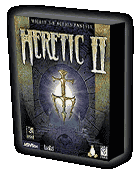

 Prepare for the ultimate in sorcery: Heretic II is now available for Linux! Power up your mana and help Corvus find the cure to a plague of epic dimensions -- and save the worlds of D'sparil before it's too late!
A high-powered and mystical three-dimensional environment will enthrall you, with spectacular sound and visual effects, non-stop action and adventure. Prepare to be ensnared in the visual feast that is the worlds of D'sparil.
Thanks to a little coding sorcery from Loki, Activision's and Raven's latest third-person adventure game is now available for Linux-based computers. Gird yourself for a long and arduous quest!
Prepare for the ultimate in sorcery: Heretic II is now available for Linux! Power up your mana and help Corvus find the cure to a plague of epic dimensions -- and save the worlds of D'sparil before it's too late!
A high-powered and mystical three-dimensional environment will enthrall you, with spectacular sound and visual effects, non-stop action and adventure. Prepare to be ensnared in the visual feast that is the worlds of D'sparil.
Thanks to a little coding sorcery from Loki, Activision's and Raven's latest third-person adventure game is now available for Linux-based computers. Gird yourself for a long and arduous quest!
Minimum System Requirements
Linux Kernel
2.2.x and glibc-2.1
Processor
Pentium 166 MHz (with 3D acceleator card) or
Pentium 233 MHz (for software rendering)
Video
Video card capable of 800x600 resolution; XFree86 version 3.3.x or newer; 16-bit color
CD-ROM
4x CD-ROM drive (600 KB/s sustained transfer rate)
RAM
32 MB required; 64 MB recommended
Sound
OSS compatible sound card
Hard disk
Minimum 260 MB free space
More links and information
Be sure to visit http://www.hereticii.com/ for great
tips, tricks, extra maps and more, all for Heretic II!